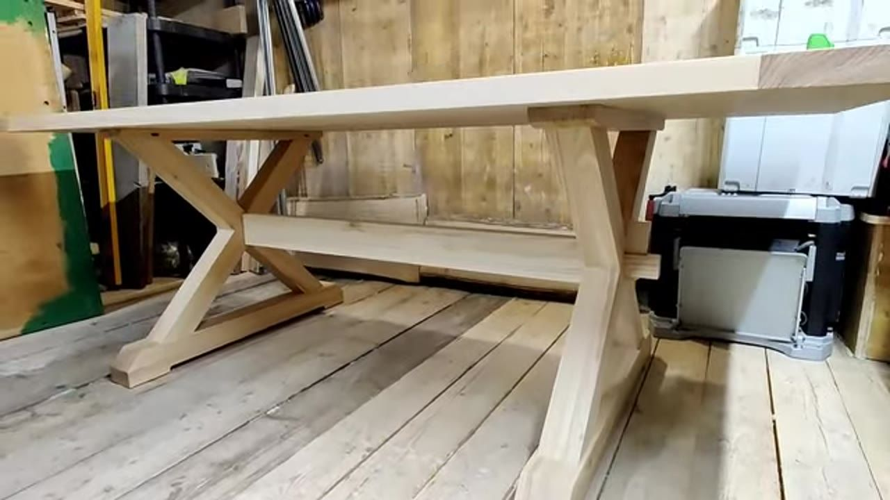
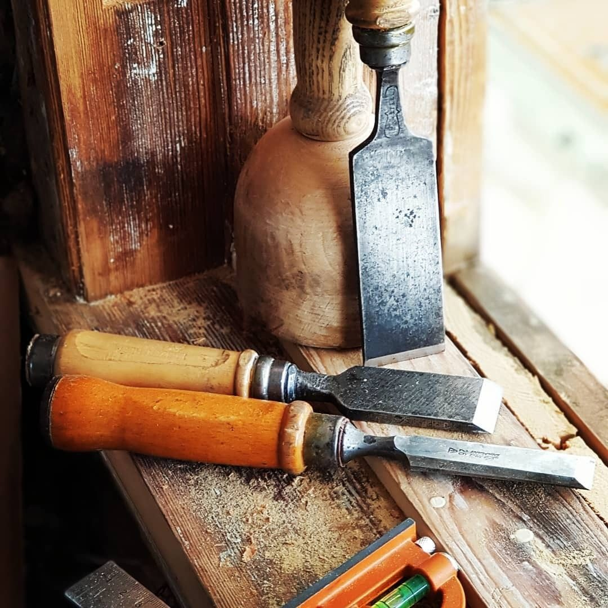
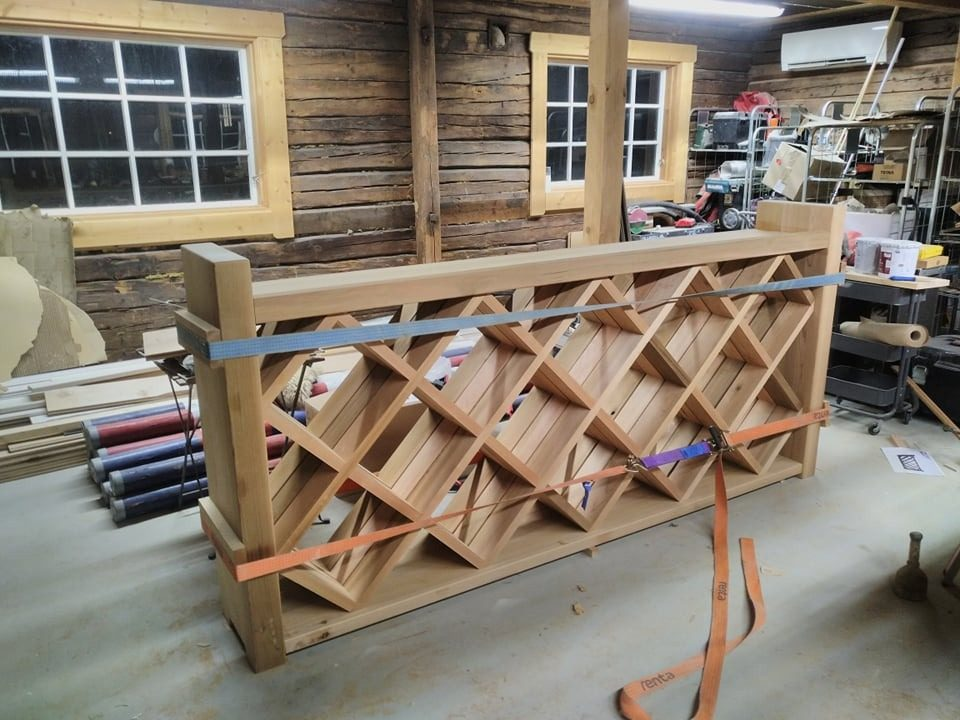
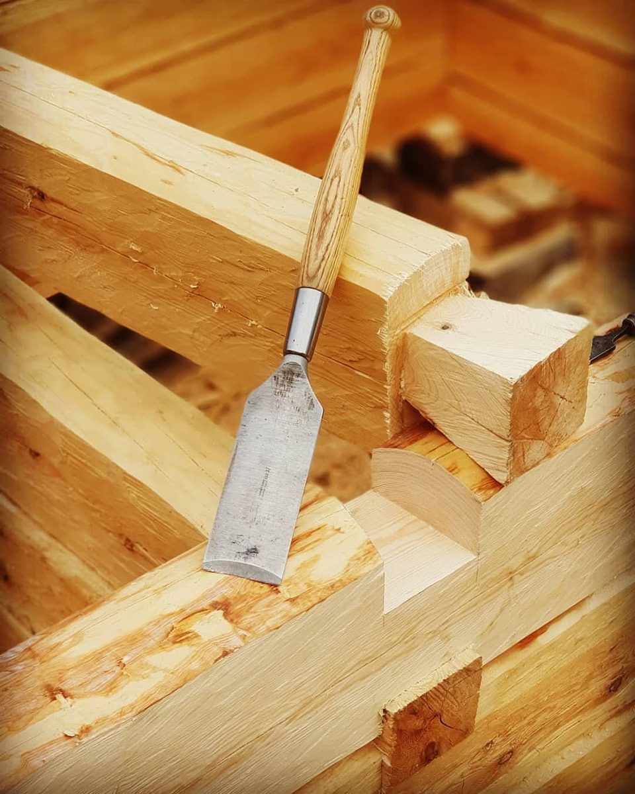
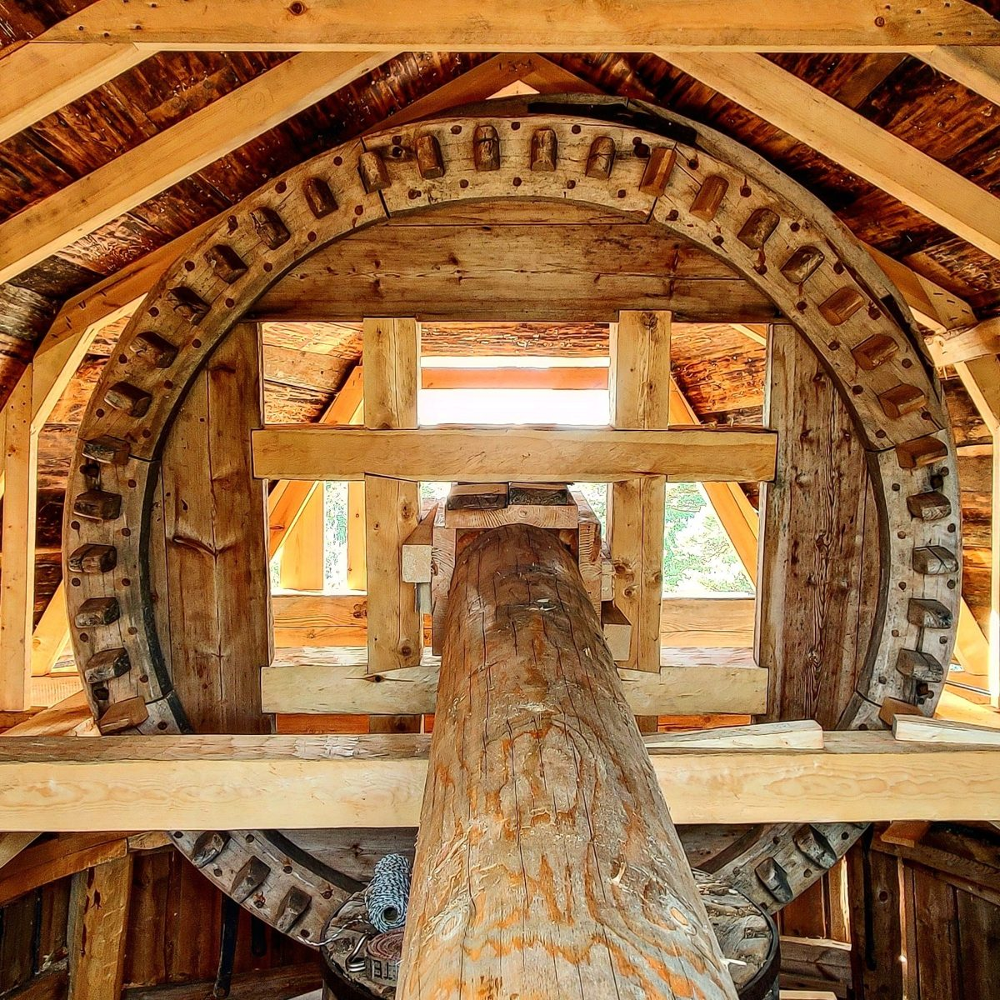
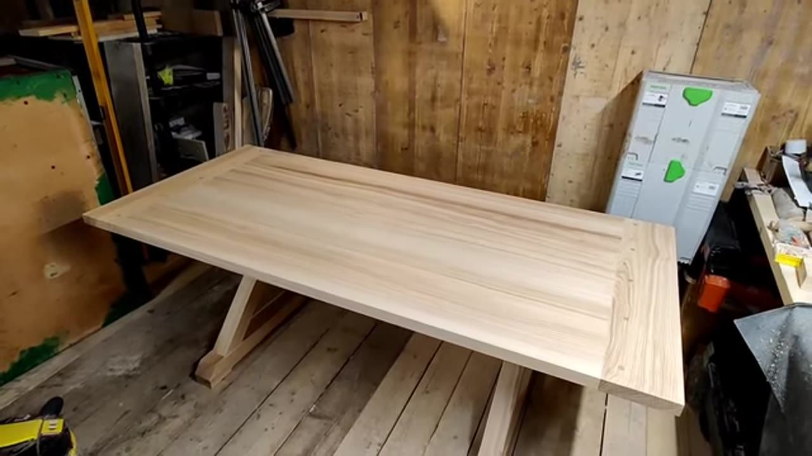
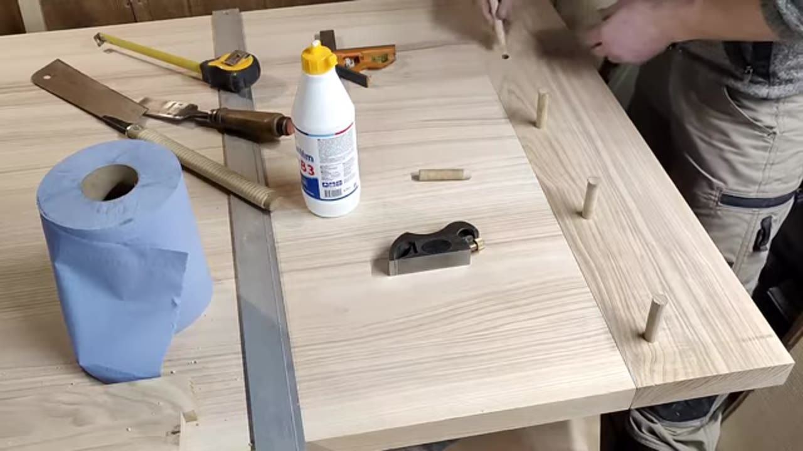
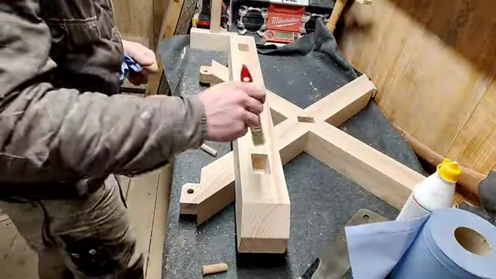

Käsitöömööbel
Lauad, pingid, kapid ja muu eritellimusel. Massiivpuit, kruvideta puiduliited, naturaalne viimistlus.
Ivalo Tiigirand · tisler
Valmistan massiivpuidust mööblit tellimuse peale: traditsiooniliste liidetega, ilma kiirustamata ja oma kätega.
Küsi pakkumistVaata töid
Minu mööblikoda ei ole lihtsalt töökoht. See on unistus, mis sai alguse ammu enne, kui selle teoks tegin. Armastus puidu, käsitöö ja detailide vastu on mind saatnud kogu elu. Vahepeal pidin, nagu paljud meistrid, tegema pausi, kuid soov luua ei kadunud kuhugi. Nüüd on minu töökoja uksed taas avatud.
Ma ei tee mööblit kiirustades ega riiulisse ootama. Iga ese valmib tellimuse peale, sinu soovi järgi ja minu enda kätega. Kasutan vanade meistrite töövõtteid ja naturaalseid materjale ning ükski lõige ega liide pole juhuslik.
Kui hindad päris puitu, ehtsat käsitööd ja ajatuid väärtusi, oled õiges kohas. Tahan tuua sinu koju sooja ja elava puudutuse, mis räägib lugu – sinu lugu.

Lauad, pingid, kapid ja muu eritellimusel. Massiivpuit, kruvideta puiduliited, naturaalne viimistlus.

Massiivpuidust raamid ja unikaalsed sisustuselemendid koju, kontorisse või aeda.

Traditsiooniliselt käsitsi tahutud palgid ja palkkonstruktsioonid.

Vanade puitkonstruktsioonide taastamine. Üks minu töödest on tuuleveski „Suur ratas“ taastamine.
Esiletõstetud töö



Massiivsaarest söögilaud X-jalgadega, kus pole ühtki kruvi ega metallklambrit. Kõik on ühendatud puidu enda liidetega, nii et laud arvestab puidu loomuliku liikumisega ja kestab põlvkondi.
Söögilauad alates 4500 €. Täpse hinna saad pärast mõõtude ja puidu kokkuleppimist.
Tavaline valmimisaeg on 4–8 nädalat, sõltuvalt töö mahust ja järjekorrast.
Olgu sul kindel idee või lihtsalt tunne, et tahaks midagi erilisemat. Kirjuta, millist eset soovid, millisesse ruumi ja mis stiil sind kõnetab.
Arutame läbi mõõdud, materjalid, viimistluse ja detailid. Vajadusel teen visandi.
Saadan sulle isikliku hinnapakkumise ja valmimisaja, tavaliselt 4–8 nädalat.
Töötan rahulikult ja puidu loomulikku rütmi austades. Soovi korral saadan töö käigus pilte.
Lepime kokku üleandmise või transpordi. Ese on naturaalse viimistlusega ja kohe kasutusvalmis, soovi korral koos hooldusjuhisega.